Step 2 & 3
Go to the folder where you downloaded the file, right-click on "rustdesk-1.4.5-x86_64.msi", and select "Properties".
In the Properties window, check the "Unblock" box and click "OK".
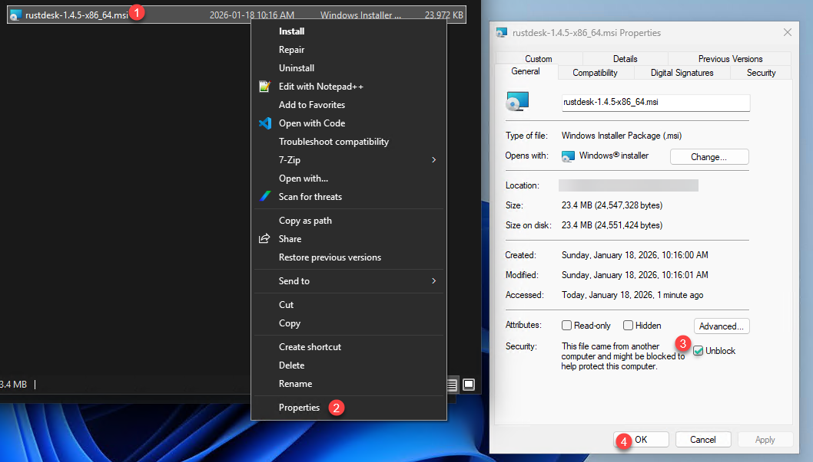
Step 5
Run the installer and click "Next".
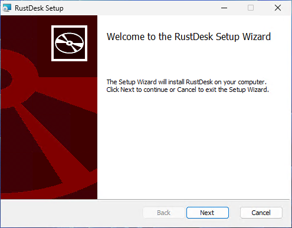
Step 6
Accept the EULA and click "Next".
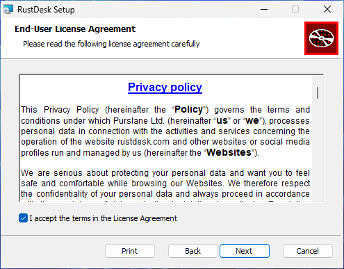
Step 7
Uncheck "Create desktop icon" and "Install RustDesk Printer" and click "Next".
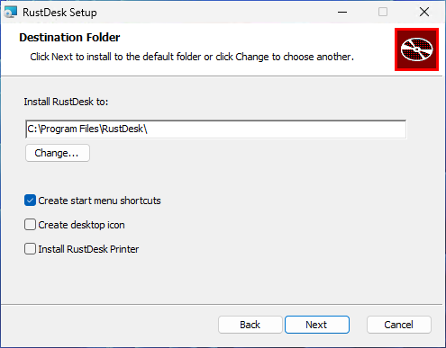
Step 8
Click "Install".
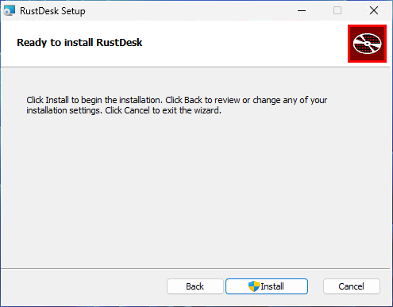
Step 9
Click "Finish".
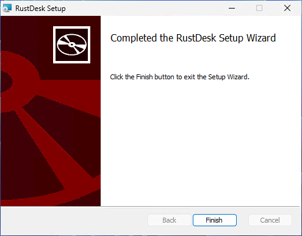
Step 10
RustDesk should start automatically. Verify the "Ready" status at the bottom. Click the three dots button in the top right of the ID field to open settings.
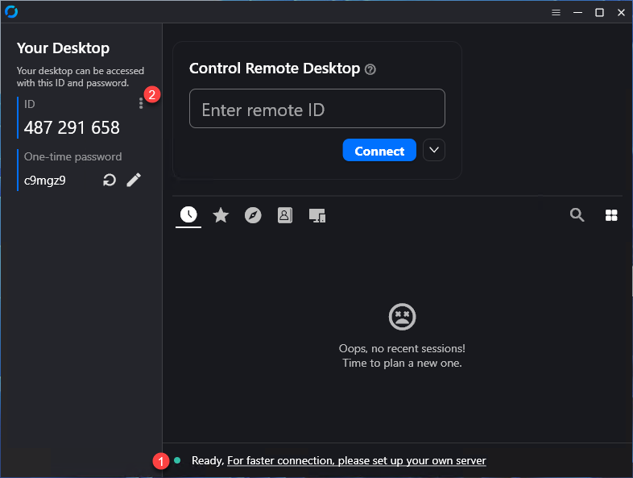
Step 11
In Settings, click "Network" > "Unlock network settings" > "ID/Relay server".
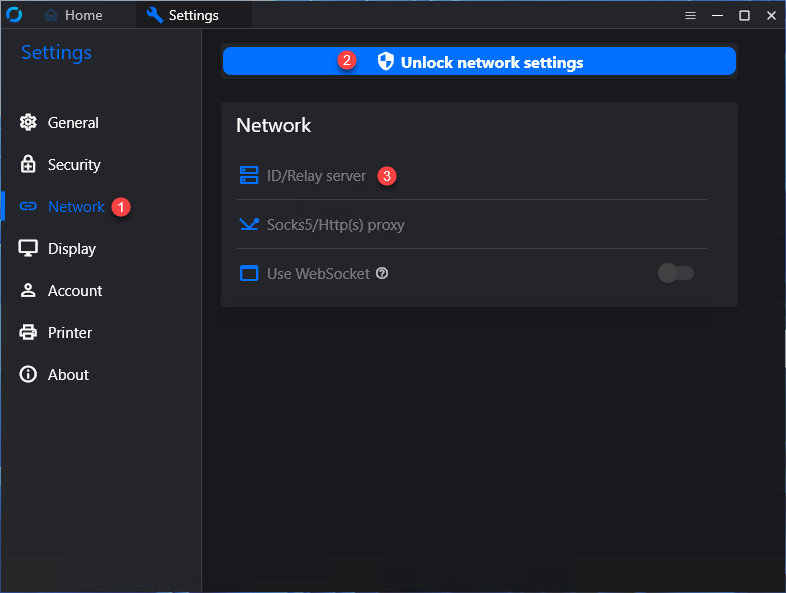
Step 12
Input "remote.hilbert.solutions" for the ID server and click "OK".
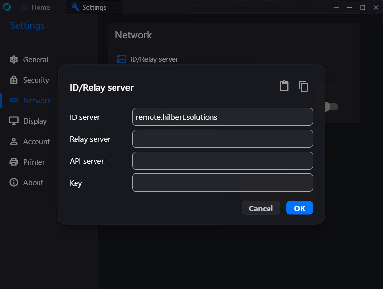
Step 13
Click the "X" on the right side of the Settings tab at the top.
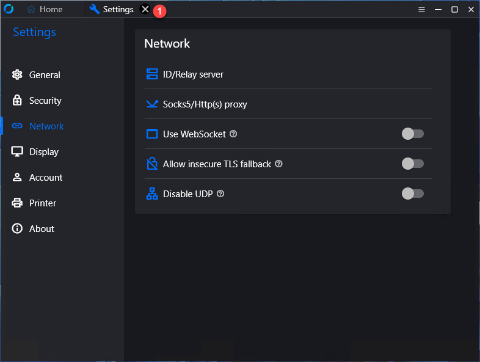
Step 14
Verify that the status is "Ready" (without the rest of the text from earlier) and provide me the ID number.
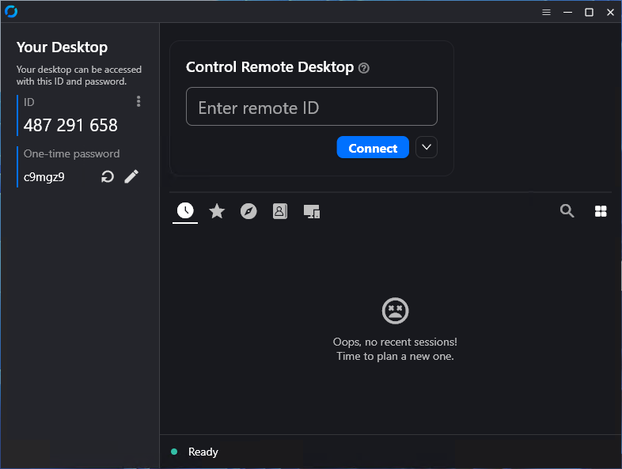
❮
❯